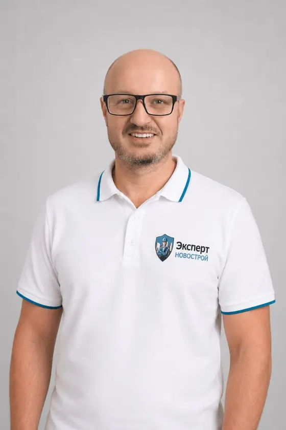
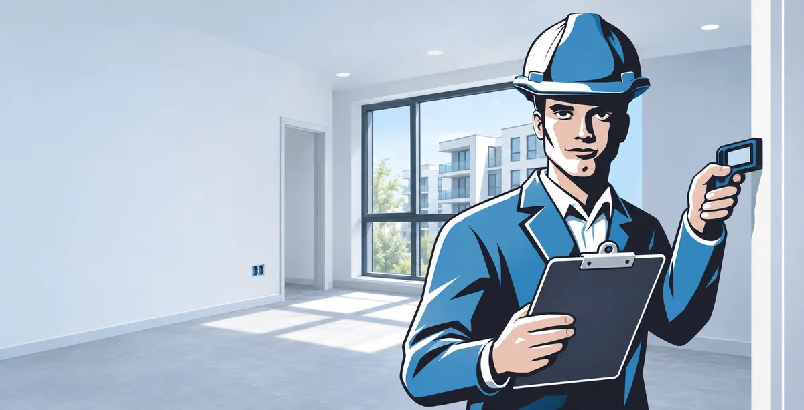
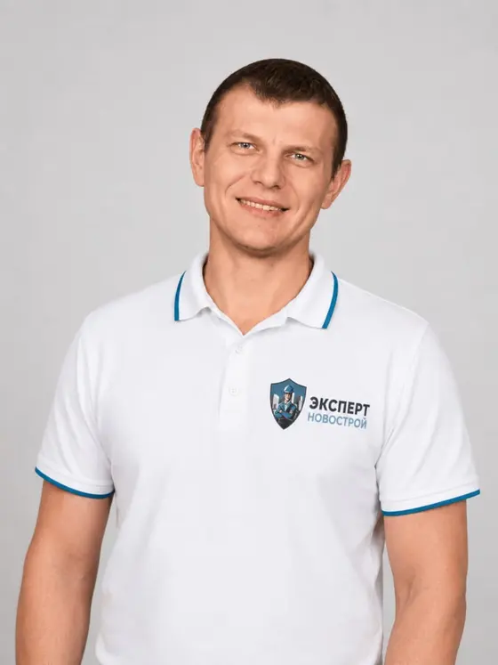
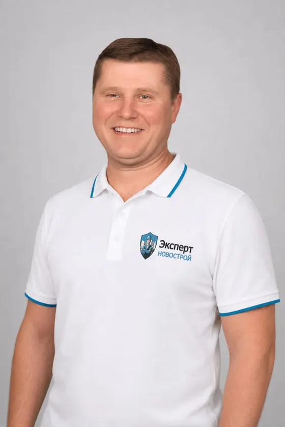
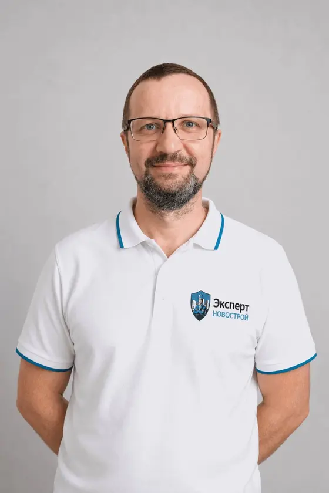
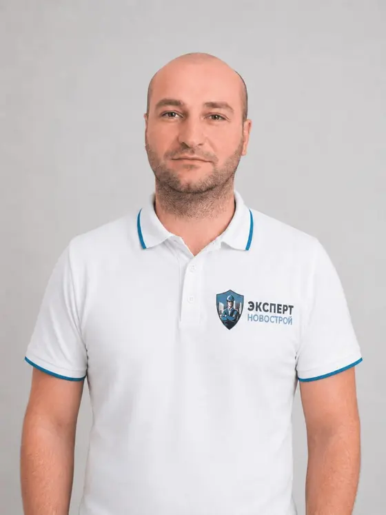
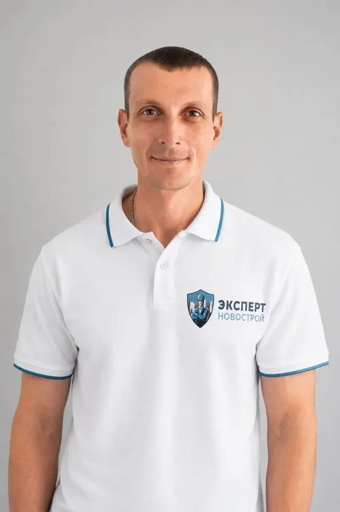
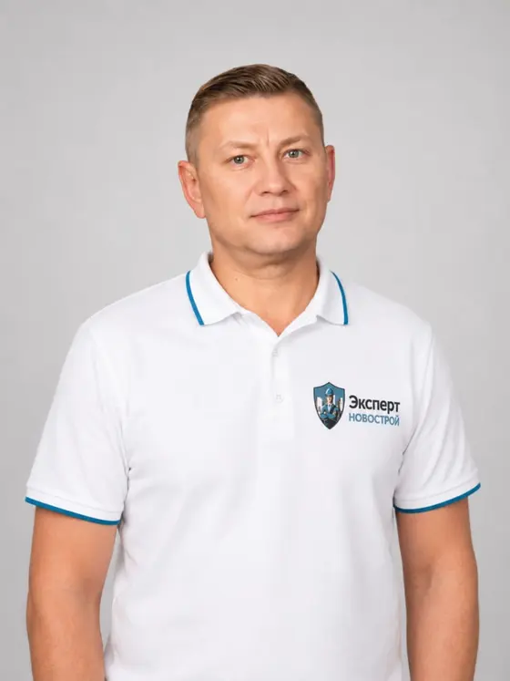
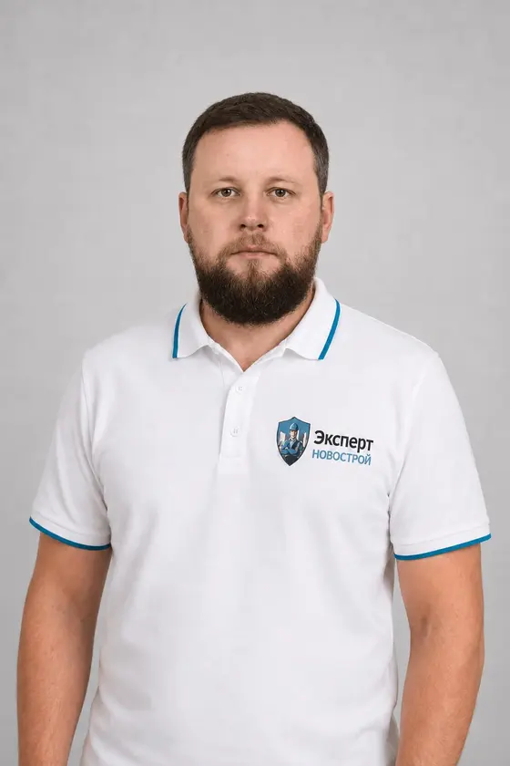

Васильев Андрей
Специалист по приёмке и осмотру объектов
Проводит приёмку квартир в новостройках, фиксирует выявленные недостатки и помогает собственнику разобраться в замечаниях к акту осмотра.
Проверяем квартиры в новостройках, фиксируем недостатки и подсказываем, что делать дальше.


Специалист по приёмке и осмотру объектов
Проводит приёмку квартир в новостройках, фиксирует выявленные недостатки и помогает собственнику разобраться в замечаниях к акту осмотра.

Специалист по приёмке и осмотру объектов
Осматривает квартиры с отделкой: проверяет поверхности, окна и двери, помогает зафиксировать недостатки, которые важно указать застройщику.

Специалист по приёмке и осмотру объектов
Проверяет квартиры без отделки: оценивает состояние стен и пола, расположение инженерных выводов и фиксирует замечания для акта осмотра.

Специалист по приёмке и осмотру объектов
Проводит первичные и повторные осмотры. При повторной приёмке сверяет состояние квартиры с замечаниями, которые ранее передали застройщику.

Специалист по приёмке и осмотру объектов
Во время осмотра проверяет окна, двери и вентиляцию, обращая внимание на качество монтажа и работу открывающихся элементов.

Специалист по приёмке и осмотру объектов
Осматривает отделку и доступные инженерные системы квартиры, проверяет розетки и сантехнические подключения, фиксирует обнаруженные замечания.

Специалист по приёмке и осмотру объектов
Проводит осмотры квартир и использует измерительное оборудование. При подходящих условиях применяет тепловизор для поиска участков возможных теплопотерь.

Специалист по приёмке и осмотру объектов
Проводит осмотры, в том числе без присутствия заказчика. Фотографирует замечания и помогает передать собственнику результаты проверки квартиры.
Специалист осмотрит квартиру и зафиксирует недостатки.
Подробнее о приёмке →Помогает установить причины и оценить стоимость устранения недостатков.
Подробнее об экспертизе →Осмотр квартиры без вашего присутствия с передачей результатов проверки.
Подробнее о дистанционной приёмке →Оставьте заявку или позвоните. Уточним адрес, дату и особенности квартиры, затем согласуем выезд специалиста.
Да, доступна дистанционная приёмка. Специалист самостоятельно осмотрит объект и передаст результат заказчику.
Подготовьте документы и опишите ситуацию. Специалист подскажет, нужна ли техническая проверка или строительная экспертиза.
Опишите задачу — подскажем, какой формат проверки подойдёт.